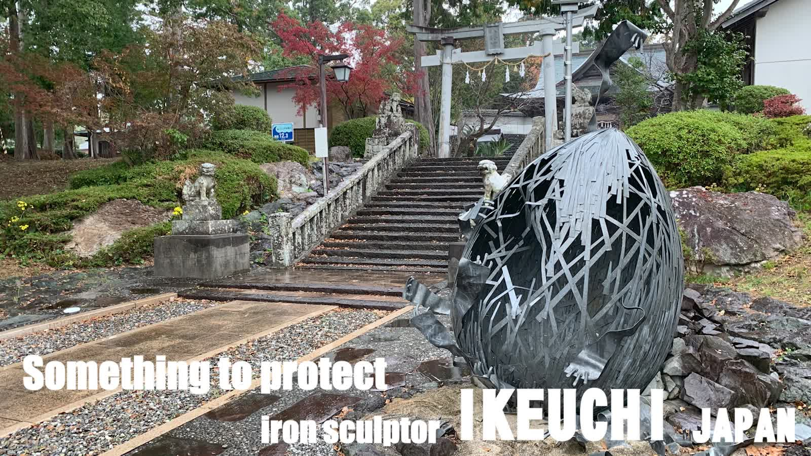

実在 Realized
Something to Protect
守るべきものA woven iron egg guarded by a single bird.
鉄 と 間
Ikeuchi hand-forges iron sculpture in Kochi, Japan — form quiet enough for a private entrance, and permanent enough to be trusted with the honor of guarding one.
The Sculptor
Ikeuchi trained in his family's ironworks on the island of Shikoku, twice placing in Kochi Prefecture's welding competitions long before he called himself an artist. In his late forties he turned that trade toward sculpture, and has exhibited every year since 2009 at Japan's most considered exhibitions.
Every piece shown here is still hand-forged in his own workshop in Kochi — nothing outsourced, nothing repeated by machine.
Concept to Reality
Every commission is first placed in a cinematic vision of its future site. These three have since left that vision and now stand, in weather, in the places they were dreamed for.

A woven iron egg the height of a person, with a single bird standing watch — installed at the head of a shrine's stone stairway.
Realized · Shrine precinct, Kochi ▶ Watch the film
A weathered mask raised on wire limbs, set at the tideline where every wave rewrites what surrounds it.
Realized · Pacific coast, Shikoku ▶ Watch the film
Iron stems and seed-pods grown into a bamboo garden rather than placed against it, ageing the way the garden ages.
Realized · Garden, Kochi ▶ Watch the filmThe Collection
Acquire a realized work as it stands, or commission a bespoke piece — already previsualized, scaled and forged to your address.
A woven iron egg guarded by a single bird.
実在 RealizedA weathered mask on wire limbs, at the tideline.
実在 RealizedIron stems grown to stand among real bamboo.
A folded flame of hammered steel for a tall space.
A cracked, weathered egg opened onto warmth.
A wire-legged vessel cradling a hammered leaf.
Works in Iron
Photographs of finished works as they were exhibited and installed. Select any image to view it full size.
A wide rusted-iron bloom holding a single stone, carried on one wandering stem — with a pierced iron butterfly settling at its edge.
Hundreds of lengths of rebar twisted into a single trunk, opening into a crown above and roots below — wrapped in a band of orange steel.
Coloured steel blades rising from a black steel core beside the museum's stone marker, reading clearly against the surrounding forest.
Functional Iron
The same hand-forged iron, made to be used every day. Each piece is built to order and can be sized and coloured for your space.
A natural log trunk sprouting coloured steel leaves that double as hooks. At home in a nursery entrance or a design-office reception.
A long, gently curving bench of cedar slats on many slender iron legs — a creature resting in the garden, with an iron head to match.
A slim cedar-clad store on a steel frame, with a forged iron flower in the window and a red lever handle.
Images marked “Placement image” show how a piece could look in a setting; they are not records of a delivered installation.
Placements
The first object a resident's eyes meet — permanence, before the brochure is read.
One object in a room built for conversation, placed to be asked about.
Weatherproof for the entrance, refined enough for the lobby or bath-house approach.
Grown alongside planting, ageing the way the garden ages.
Process
We review your site — light, sightlines, scale, and what it should say.
The piece is placed in a cinematic render of its future setting for approval.
Hand-built in Ikeuchi's Kochi workshop, using technique practiced since youth.
Delivered, installed, and weather-tested, with an ongoing care plan.
Recognition
Contact
Send the location and the space you have in mind. We reply with a first previsualization concept before anything is agreed.